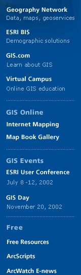
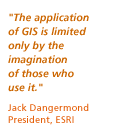

| news |
| home page |
|  | Links to more than 2,000 selected business and management-related Internet resources are included. . User Services Library Instruction and Tutorials Off-Campus Support News and Events About the Libraries Friends and Supporters Staff Resources This Research Guide provides assistance in doing research in a variety of business and management topics, with descriptions of databases and hundreds of reference books in the collections of the Rutgers University Libraries. Links to more than 2,000 selected business and management-related Internet resources are included. . |
|  | ERAS is a service which transmits residency application, and supporting credentials from medical schools to residency program directors using the Internet. more Technical Support Equipment Recommendations DW FAQs more. Resource Center Information for Applicants Information for Residency Programs ERAS News The ERAS PostOffice will close on April 30th, 2002. Register for ERAS 2003 Training Schools New ERAS 2003 Registration New Get ERAS 2003 Training Information (PDF 9KB) New Get ERAS 2003 Training Registration Form (PDF 12. 2 KB) Get ERAS 2002 DW Software Get ERAS 2002 DWS Import Token Tutorial ERAS 2002 Timeline ERAS 2001 Surveys Transcript guidlines for Medical School transfer students (PDF Format) MyERAS 2002 ScreenShots DW 2002 Close Out Procedure (PDF Format 24. |